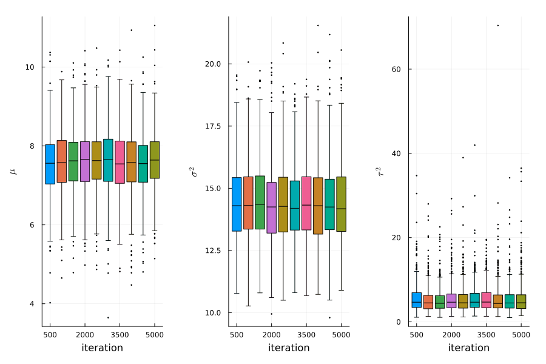
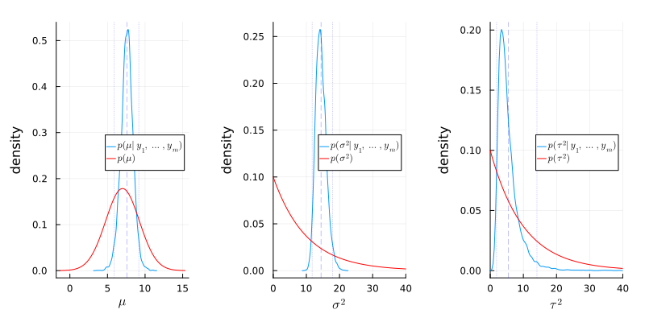
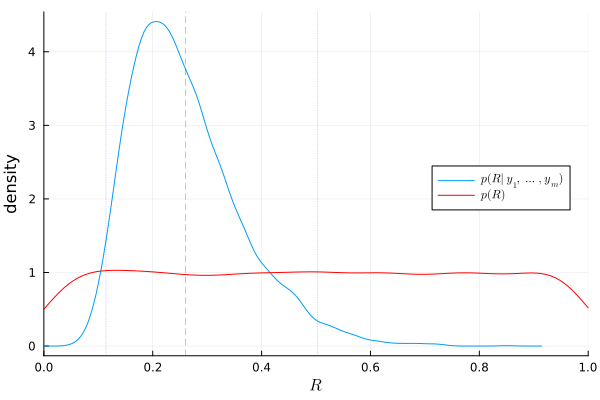
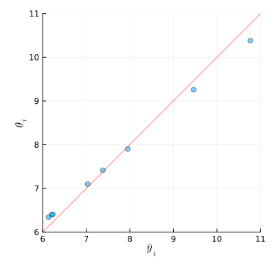

8.3
Answers of exercises on Hoff, A first course in Bayesian statistical methods, Chapter 8
a)
Answer
using Distributions using Random using LaTeXStrings using Plots, StatsPlots using Plots.Measures using CSV, DataFrames using DelimitedFiles using StatsBase using SpecialFunctions Random.seed!(1234) # %% # read data Y = Matrix{Float64}(undef, 0, 2) for i in 1:8 school = readdlm("../../Exercises/school$i.dat") Y = vcat(Y, hcat(repeat([i], size(school, 1)), school)) end # %% # set prior parameters μ₀ = 7 γ₀² = 5 τ₀² = 10 η₀ = 2 σ₀² = 10 ν₀ = 2 # %% # starting values m = length(unique(Y[:,1])) n = Vector{Float64}(undef, m) ȳ = Vector{Float64}(undef, m) sv = Vector{Float64}(undef, m) for j in 1:m ȳ[j] = mean(Y[Y[:,1] .== j, 2]) sv[j] = var(Y[Y[:,1] .== j, 2]) n[j] = length(Y[Y[:,1] .== j, 2]) end θ = copy(ȳ) σ² = mean(sv) μ = mean(θ) τ² = var(θ) # setup MCMC Random.seed!(1) S = 5000 THETA = Matrix{Float64}(undef, S, m) MST = Matrix{Float64}(undef, S, 3) # MCMC algorithm for s in 1:S # sample new values of the θs for j in 1:m v_θ = 1 / (n[j] / σ² + 1 / τ²) E_θ = v_θ * (n[j]*ȳ[j]/σ² + μ/τ²) θ[j] = rand(Normal(E_θ, sqrt(v_θ))) end # sample new value of σ² νₙ = ν₀ + sum(n) ss = ν₀ * σ₀² for j in 1:m ss += sum((Y[Y[:,1] .== j, 2] .- θ[j]).^2) end σ² = 1 / rand(Gamma(νₙ / 2, 2/ss)) # sample a new value of μ v_μ = 1 / (m/τ² + 1/γ₀²) E_μ = v_μ * (m * mean(θ) / τ² + μ₀ / γ₀²) μ = rand(Normal(E_μ, sqrt(v_μ))) # sample a new value of τ² etam = η₀ + m ss = η₀ * τ₀² + sum((θ .- μ).^2) τ² = 1 / rand(Gamma(etam/2, 2/ss)) # store results THETA[s, :] = θ MST[s, :] = [μ, σ², τ²] end

Figure 1: stationarity plot
using MCMCDiagnosticTools using MCMCChains ess(MCMCChains.Chains(MST))
ESS
parameters ess ess_per_sec
Symbol Float64 Missing
param_1 4046.5607 missing
param_2 4697.5784 missing
param_3 3299.9524 missing
b)
Answer
# posterior mean and 95% confidence region for σ² julia> mean(MST[:,2]) 14.413317696499103 julia> quantile(MST[:,2], [0.025, 0.975]) 2-element Vector{Float64}: 11.733606090321313 17.92710379952854
# posterior mean and 95% confidence region for μ julia> mean(MST[:,1]) 7.587311747784735 julia> quantile(MST[:,1], [0.025, 0.975]) 2-element Vector{Float64}: 5.910059688648781 9.160791496009686
julia> mean(MST[:,3]) 5.478604048700004 julia> quantile(MST[:,3], [0.025, 0.975]) 2-element Vector{Float64}: 1.9240022529423977 14.101516261365546

Figure 2: Comparison of posterior and prior densities
The following things were learned from the data:
- \(\sigma^2\) is around 14.4, which is higher than the prior mean 10.0, and the variance is smaller than the prior variance 100.
- \(\mu\) is around 7.6, which is higher than the prior mean 7.0, and the variance is smaller than the prior variance 10.0.
- \(\tau^2\) is around 5.5, which is smaller than the prior mean 10.0, and the variance is smaller than the prior variance 100.
c)
Answer
σ²_pri = rand(Gamma(ν₀/2, 2σ₀²/ν₀), S) τ²_pri = rand(Gamma(η₀/2, 2τ₀²/η₀), S) R_pri = τ²_pri ./ (σ²_pri .+ τ²_pri) R_pos = MST[:,3] ./(MST[:,2] .+ MST[:,3])

Figure 3: Prior and posterior densities of \(R\)
The plot above shows that about 25% of the variance is due to between-school variation, and the rest is due to within-school variation.
d)
Answer
# posterior probability that θ₇ is smaller than θ₆ mean(THETA[:,7] .< THETA[:,6])
0.5222
# posterior probability that θ₇ is the smallest of all the θ’s mean(THETA[:,7] .≤ minimum(THETA, dims=2))
0.325
e)
Answer
θ̄ = mean(THETA, dims=1) |> vec fig_e = plot( ȳ, θ̄, seriestype=:scatter, xlabel=L"\bar{y}_i", ylabel=L"\theta_i", legend=:none, xlims=(6,11), ylims=(6,11), size=(400, 400), margin=5mm, alpha=0.5 ) fig_e = plot!(fig_e, x->x, color=:red, linewidth=1,alpha=0.5) fig_e

Figure 4: Sample averages and posterior expectations
For the schools with large sample averages, the posterior expectations tend to be smaller than the sample averages. For the schools with small sample averages, the posterior expectations tend to be larger than the sample averages.
# sample mean of all observations mean(Y[:,2])
7.6912777777777785
# posterior mean of μ mean(MST[:,1])
7.587311747784735